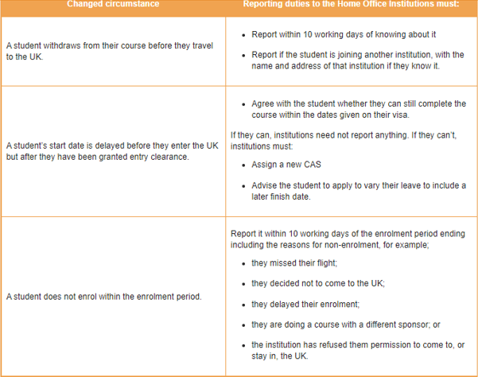

One of the most serious lapses in trust between the agent and institution occurs through non-compliance with the current UK Visa and Immigration (UKVI) regulations. The ultimate responsibility for this lies with the institution, which must therefore be confident that as an agent you are knowledgeable and fully conversant with the codes and regulations.
UKVI codes and regulations are frequently changed or extended, so it is imperative that you keep fully updated and informed.
Universities must provide the UKVI with statistics including visa refusal rates, which must not exceed their ‘tolerance threshold’.
Agents are expected to be completely honest, trustworthy and well-informed in this.
Schools, colleges or universities which are allowed by the UK Home Office to sponsor international students to study appear on the list of approved education providers (Register of licensed sponsors).
All sponsors must work within the guidelines of the UKVI Policy and provide information to the Home Office about the international students applying and studying at their institution. If they do not report anything that they should, they may have their license suspended, and may lose it. The method and information to be reported changes periodically, reflecting changes in UK Government and UK Home Office policy. Sponsors must monitor and comply with these changes.
They must also give information on the agents used to recruit the students.
To protect their Student status, you and your students must be aware of their institution’s ‘reporting’ responsibilities. As an agent you should inform the institution of any changes you are aware of in the student’s or prospective student’s circumstances. Students must make sure that they too are complying with all their responsibilities to be a ‘good student’.
For an international student to gain a successful result from their course and period of study they will need to have the necessary capacity and resources. These include both educational background and material resource and support. The student’s intention is for a temporary stay in the UK to achieve their educational qualification. Institutions may want to interview the student.
Institutions are only allowed to accept and issue a CAS to ‘genuine students’, and UKVI places duties and responsibilities on them to ensure this is the case. For a CAS to be issued the student must:
In addition, the course must represent ‘academic progress’ for the student.
For a course to represent academic progress from previous study, the course must:
Sponsors must also assess whether the visa and immigration leave requested now will lead to the student exceeding the three-year limit on courses below degree level or the five-year cap on courses at degree level.
In addition, all sponsors must ensure that sponsored students are academically engaging throughout the period of leave for which they are being sponsored. A student is academically engaging if they are actively and consistently following their course of study
This new academic engagement policy for higher education providers replaces the current attendance monitoring policy.
The Home Office have introduced credibility interviews into the Student visa application process. However, if the student is a low risk national they may not be called for interview.
There are two types of credibility interview. The first type will take place at the same time as their biometrics are taken at the Embassy or designated agency. This initial interview will only take around five minutes and will be via video link with the Home Office in the UK. The purpose of the interview is to check the student’s credibility as a genuine student and the focus of this interview will be their reasons for choosing the UK, the University and the programme of study as well as questions on the content of their course.
The Home Office will record the interview and send a summary to the Entry Clearance Officer who will decide if a second more detailed interview at the Embassy is needed. The Home Office expects most applicants to be able to prove they are genuine at the first stage and that this will in fact speed up the decision process on applications because fewer documentation checks will be required.
The student will be asked questions about they chose the UK, the University and their academic programme and how this course fits into their career aspirations. They may also be asked about how they plan to fund their studies.
Student visa applicants in the UK may be contacted to participate in an interview if there are discrepancies between the supporting documents which have been provided and the information included in the visa application form, or if the caseworker considering the application requests an interview in order to obtain more information before they can make a decision. Failure to attend an interview when invited may result in the students’ visa application being refused.
A transcript of their interview will be included in the information which the caseworker will use to decide the students’ application
Students can request a copy of their interview transcript and it is recommended that all students do this
If the student has previously studied a course which is at the same level as the new course and the student received an academic progression justification statement alongside their CAS, they are more likely to be invited to an interview. This is because the caseworker is required to assess whether the academic progression requirement is met.
When making this assessment, the caseworker will consider the level of the courses, the subject matter of the new and previous courses, the education history, the credibility for the students’ rationale for wishing to study the new course, and whether the justification statement sufficiently explains why they are applying to study a course at the same level. If a student is invited to an interview, they should be prepared to talk about reasons why they want to pursue their course sufficiently.
The credibility interview is used to assess whether they are "genuine students", i.e. they intend and are able to undertake the course for which If a student is asked to an interview but does not attend without a reasonable explanation, the application will be refused.
If an institution sponsors a child aged under the age of 18 it must keep records of parental/legal guardian consent to the arrangements for the child’s application, travel, reception and care arrangements in the UK.
Children aged 16 and 17 have the legal right to live independently in the UK, and may make their own arrangements for accommodation, but they need the consent of parental/legal guardian to do this and to travel to the UK (if applying from overseas)
The table below gives a list of circumstances before or at the course start, which institutions must report to the Home Office, and the actions they must take.
It is vitally important to keep institutions well-informed of any changed circumstances, so that they can be correctly reported to the Home Office.
The Home Office can bring the students’ immigration permission to an end early if they are notified of one of these issues.
International students are obliged by the UK Home Office to actively engage with their studies. For students to be successful, they need to be present at all expected study and meeting periods. This is also a requirement to maintain their visa. Make sure you make students aware of this.
Attendance monitoring is an important part of protecting their visa status. Attendance and engagement with their courses of study are monitored in various ways, to help international students maintain their obligations as Tier 4 visa holders.
Examples of expected contacts include attending formal academic or pastoral care activities including:
There are different ways institutions may record this, for example monitoring may include:
Institutions must keep records of expected attendance and report 10 missed contact periods.
Absences from the institution and studies can happen. They don't have to affect an international student's enrolment and visa, but it is very important that they tell the institution about it.
Students MUST inform their institution about any absences and find out how to do this at the start of their course. The institution’s aim is always to support their international student community while maintaining their sponsor status.
If a student’s personal circumstances make it impossible to attend or hand in work, they must inform the institution, their supervisor, course tutor or advisor straightaway. It may be possible to miss a short agreed period and then continue.
If they are no longer able to finish their course within their current Student visa permission, then they may have to defer their studies. It is very important to establish how much of the course may be missed as soon as possible – is it possible to ‘catch up’ or is it necessary to defer their studies?
If a student defers their studies after they have arrived in the UK and is no longer actively studying the student’s permission to stay is no longer valid. Institutions must report that the student has deferred within 10 working days of knowing about it and advise them to leave the UK.
Once the student is ready to resume their studies, then the institution will have to assign a new CAS and the student must reapply for a new visa.